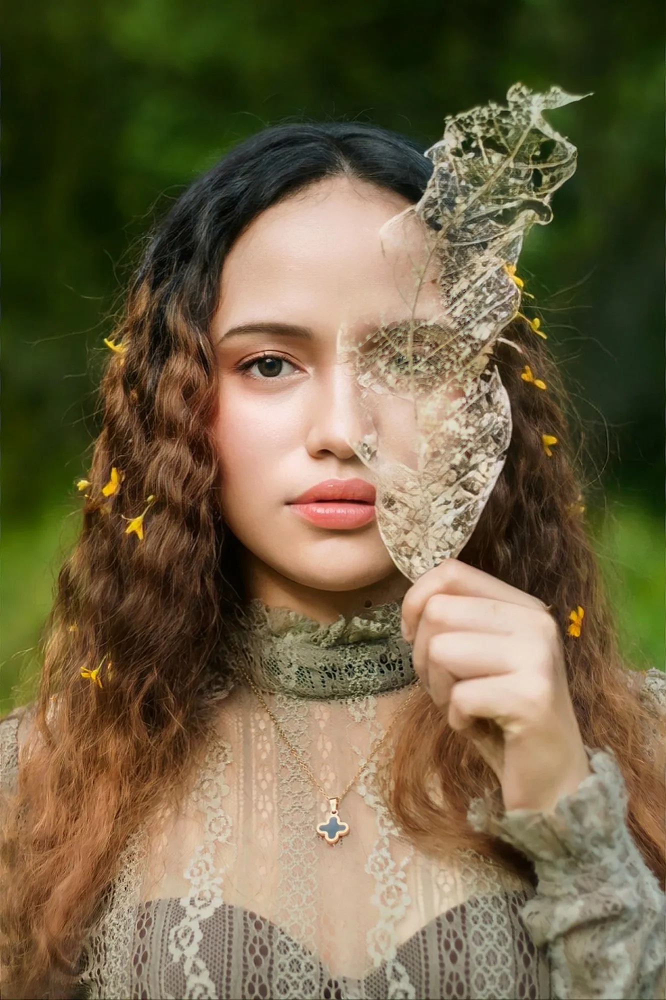

Working out of a small studio in Chicago, always somewhere between golden hour and 2am.
I first picked up my camera the summer I moved to Chigaco. Seven years later, I find myself still taking pictures in the beautiful city I call home - maybe it's the deep dish pizza holding me captive.
I specialize in portraits. Nothing makes me happier than seeing subjects smile at their photos, feeling good about every single one. Everyone deserves to feel beautiful and share that beauty with others.
These days I spend most of my time split between comissioned shoots and personal projects - If you like my work or just need a local photographer, I may be the photographer for you! Don't be afriad to reach out and send me a message!